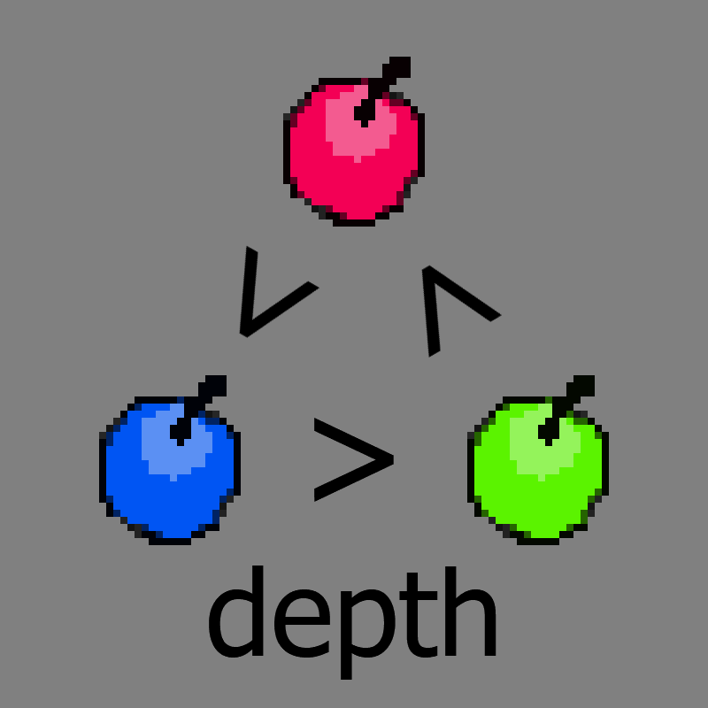

chapter11 - section6
| creator | segment | label | jump |
|---|---|---|---|
| NN | 2:35.90~2:36.50 | P*A*S/Q | infinite |
11-3~11-5の解答に対応する、じゃんけんを題材とした択一型の弾幕です。
11-3および11-4において弾の色と重なり方の関係を見極め、11-5においてその関係が正しく反映されている列を判断することを目的としています。
11-3において画面中央を中心として回転する同心円状弾幕（fig.11-6.1.a）、および11-4において画面外から出現する6方向に広がる放射状弾幕（fig.11-6.1.b）に関して、4-6と同様の考え方を用いることでこれらを構成する弾の色とdepthの関係がfig.11-6.2に示すように三つ巴になっていることが確認できます。


11-5以降存在する画面下部を中心として回転する黒色の放射状弾幕、および2:34.30~2:35.90において黒色の放射状弾幕に追従する形で出現する円形弾幕について（fig.11-6.3.a）、11-3および11-4における色とdepthの関係が正しく反映されている列が正解の列となります（fig.11-6.3.b）。
なお、黒色の放射状弾幕については回転方向のみがランダムとなります。